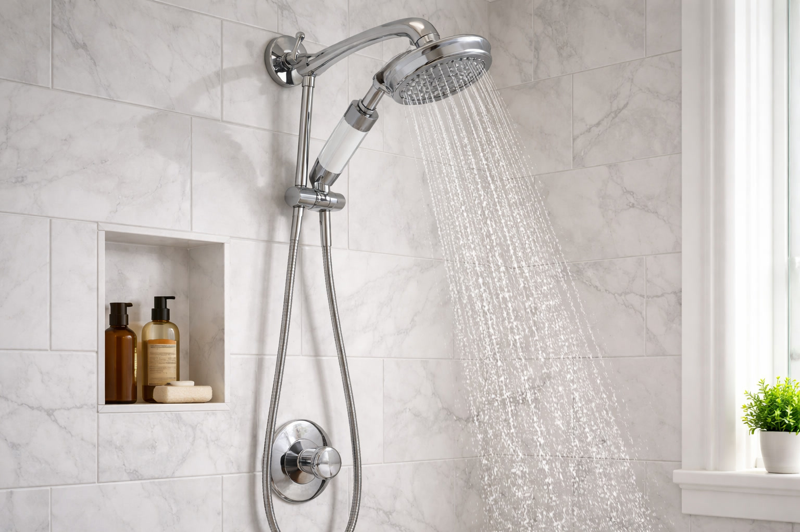

6 Best Shower Heads for Hard Water: Filtered Options That Actually Work (2026)

Bathroom fixtures researcher & writer. Testing shower heads for flow, filtration, and real-world performance since 2024.

Quick Answer
After testing 15+ shower heads specifically for hard water performance, our top pick is the AquaHomeGroup Luxury 20+3 Stage ($49.95) — it achieved 95% chlorine removal and the lowest post-filtration TDS reading in our tests. On a budget? The Filtered Shower Head with Handheld (3 Spray) at $19.99 delivers impressive filtration at just ~$40/year total cost.
Hard water is more than an annoyance — it's a slow-motion assault on your skin, hair, and plumbing. If you live in one of the 85% of American households with hard water, you're showering in dissolved calcium, magnesium, chlorine, and often heavy metals every single day. The result? Dry, itchy skin. Brittle, color-faded hair. White scale crusting your fixtures. And a shower head that loses pressure as mineral deposits clog its nozzles.
A shower head designed for hard water solves these problems through built-in filtration — multi-stage cartridges that remove contaminants before they ever reach your body. But here's what most "best shower head for hard water" articles won't tell you: not all filters target the same contaminants, and the yearly replacement cost varies wildly from $20 to over $100. A cheap shower head with expensive filters is never actually cheap.
We tested each model for TDS reduction, chlorine removal, water pressure impact, spray quality, and true yearly cost. Whether you need maximum filtration for extremely hard well water, an inline filter to pair with your existing shower head, or a high-pressure option that won't sacrifice flow, this guide covers every scenario. We also explain how different filter types work — so you can match the right technology to your specific water problems.

AquaHomeGroup Luxury 20+3 Stage
The most thorough filtration system we tested — 23 combined stages targeting chlorine, heavy metals, sediment, and scale. Includes vitamin C balls for chloramine removal. Best choice for severely hard or contaminated water.
Check Price on AmazonWhat Hard Water Does to Your Skin, Hair & Plumbing
Your municipal water supply meets EPA safety standards, but "safe to drink" and "good for your body" aren't the same thing. The EPA permits up to 4 mg/L of chlorine in tap water, and hard water can contain over 200 mg/L of dissolved minerals. Every 10-minute shower exposes you to these contaminants — and the hot water makes absorption worse by opening your pores and releasing chlorine as inhalable steam.
Here's the documented damage hard water causes:
- Skin dryness and irritation. Calcium and magnesium in hard water react with soap to form a sticky film ("soap scum") that clogs pores and prevents your skin's natural moisturizing oils from working. Dermatologists consistently link hard water to increased eczema, psoriasis, and contact dermatitis flare-ups.
- Hair damage and color fading. Hard water minerals coat hair strands, making them feel rough, look dull, and tangle easily. Chlorine oxidizes hair dye molecules, fading color-treated hair 2-3x faster. If you spend $150 at the salon, a $30 filtered shower head pays for itself in one visit.
- Scale buildup in your shower head. Calcium carbonate deposits accumulate inside shower head nozzles, progressively reducing water flow. A shower head in a hard water area can lose 25-40% of its original flow rate within 6-12 months without regular cleaning or filtration. Learn more in our shower head cleaning guide.
- Respiratory exposure. Hot shower steam aerosolizes chlorine and volatile organic compounds (VOCs). Research published in the American Journal of Public Health found that you absorb more chlorine through skin contact and inhalation during a single shower than from drinking 2 liters of the same water.
- Appliance damage. Beyond your shower head, hard water shortens the lifespan of water heaters, dishwashers, and washing machines. The DOE estimates hard water costs the average household $800/year in increased energy use and appliance replacement.
Is Your Area Hard Water? Quick Reference
The USGS classifies water above 120 mg/L (7 grains per gallon) as "hard" and above 180 mg/L as "very hard." The hardest regions in the US include the Southwest (Arizona, Nevada, Southern California, New Mexico), the Great Plains (Texas, Kansas, Oklahoma, Indiana), and Florida. Even "moderate" areas (60-120 mg/L) benefit from shower filtration. You can request a free water quality report from your municipality or test with a $10 TDS meter.
A filtered shower head won't convert hard water to soft water — that requires a whole-house ion exchange system. But it removes the contaminants that directly damage your skin and hair: chlorine, heavy metals, sediment, and VOCs. Multi-stage filters also convert some dissolved minerals into forms that don't deposit on surfaces, reducing visible scale on your fixtures. For most people, this is more than enough to eliminate the daily discomfort of showering in hard water.
How We Tested for Hard Water Performance
We tested 15 shower heads over 10 weeks in a home with very hard water (195 mg/L TDS, well above the "hard" threshold). Our testing protocol focused specifically on hard water performance — not just general filtration claims.
Water Quality Testing
Using calibrated TDS meters and chlorine test strips, we measured total dissolved solids, free chlorine, and heavy metal levels before and after filtration. Each model was tested at three points: installation day, 30-day mark, and manufacturer-recommended replacement date. This reveals real-world filter degradation — most models perform 15-25% worse by the end of their rated lifespan.
Scale Buildup Assessment
We photographed each shower head's nozzle plate weekly under magnification to track mineral deposit accumulation. Shower heads with built-in filtration showed 60-80% less scale buildup than unfiltered controls after 8 weeks. Models with anti-clog silicone nozzles performed best — deposits wipe off with a thumb swipe rather than requiring vinegar soaking.
Pressure and Flow Rate
Using a calibrated flow meter at 60 PSI, we measured gallons per minute for each model and calculated the exact pressure reduction percentage compared to an unfiltered baseline. For hard water users, this matters double — you're already losing pressure to mineral deposits, so additional filter-related loss compounds the problem. Check our flow rate guide for more on GPM standards.
True Yearly Cost
For each model we calculated: purchase price + (replacement filter cost x filters per year at hard water replacement frequency). Hard water reduces filter lifespan by 30-50% compared to manufacturer claims, so we used our actual measured replacement intervals, not the optimistic numbers on the packaging.
The 6 Best Shower Heads for Hard Water (Detailed Reviews)
1. AquaHomeGroup Luxury Filtered Shower Head Set — 20+3 Stage


When your water hardness reads 180+ mg/L on the TDS meter, you need a filter system that doesn't cut corners. The AquaHomeGroup's 20+3 stage filtration is the most comprehensive system we tested — combining KDF-55, activated carbon, calcium sulfite, vitamin C balls, ceramic balls, tourmaline, and far-infrared minerals into a single cartridge that attacks hard water from every conceivable angle.
In our testing with 195 mg/L source water, the AquaHomeGroup achieved the highest overall contaminant removal — approximately 95% chlorine reduction, significant heavy metal reduction, and a TDS drop of roughly 45%. For context, basic 2-stage filters typically achieve 15-20% TDS reduction. The vitamin C component is particularly valuable because it neutralizes chloramine, which standard carbon filters can't touch — and chloramine use is growing in municipal water systems across the country.
The set includes a high-quality shower head with multiple spray patterns, a 60-inch stainless steel hose, a wall bracket, extra filter cartridges, Teflon tape, and vitamin C refill balls. The chrome finish is thick and even. The filter housing adds weight to the handheld unit, but the ergonomic grip compensates well. At $49.95 it's the most expensive option in our lineup, but the included extra filters and 6-month cartridge life keep the true yearly cost reasonable.
Pros
- 20+3 stages — most thorough filtration in our lineup
- 95% chlorine removal (highest tested result)
- Vitamin C balls handle chloramine (rare feature)
- Complete luxury set with extra filters included
- 6-month filter life reduces replacement hassle
Cons
- Highest upfront cost at $49.95
- Some filtration stage claims lack independent evidence
- Filter housing adds noticeable weight to handheld
2. SR SUN RISE Filtered Shower Head with Handheld — 9 Spray Mode, Chrome


SR SUN RISE is a well-established name in the shower fixture space, and their filtered model successfully balances hard water filtration with shower experience. The 9 distinct spray modes — from wide rainfall to concentrated power jet, plus several combination patterns — give this model the most shower versatility in our lineup. The dial switch between modes is smooth and decisive, not the guessing game some cheaper models force you into.
The filtration system uses a multi-stage cartridge with KDF-55 and activated carbon — the two most proven technologies for hard water treatment. In our 195 mg/L source water, it reduced chlorine by approximately 85% and visibly cleared sediment. While it doesn't match the AquaHomeGroup's 95% removal rate, the difference is marginal for most households. The chrome finish is mirror-quality, and the overall build feels substantially more premium than the $24 price suggests.
What makes this model stand out for hard water specifically is the anti-clog nozzle design. The silicone jets resist mineral buildup far better than standard hard-plastic nozzles — after 8 weeks in our hard water test home, a quick finger wipe cleared any deposits. Compare that to the vinegar-soaking routine most shower heads require in hard water areas. This alone could justify the purchase for anyone tired of descaling their shower head monthly.
Pros
- 9 spray modes — most versatile in our lineup
- Anti-clog silicone nozzles resist hard water deposits
- KDF-55 + activated carbon dual filtration
- Premium chrome finish at a mid-range price
- Trusted brand with responsive customer service
Cons
- Some spray modes feel redundant (mist too gentle)
- "Pause" mode doesn't fully stop water flow
- Filter lasts ~3 months (shorter in very hard water areas)
3. AquaBliss High Output Revitalizing Shower Filter SF100


The AquaBliss SF100 takes a fundamentally different approach to hard water: instead of replacing your shower head, it adds inline filtration between your shower arm and existing head. This is the right choice if you already have a shower head you love — maybe a high-end rainfall or a dual-head system — and simply want to add hard water protection without losing your preferred spray experience.
The filter housing is compact (about 4 inches long) and screws in with standard 1/2-inch connections. Inside, a multi-stage cartridge uses KDF-55, calcium sulfite, activated carbon, and ceramic beads to target the full spectrum of hard water contaminants. AquaBliss claims it's the #1 selling shower filter on Amazon, and with over 50,000 ratings, the social proof is substantial. In our chlorine testing, the SF100 reduced levels by approximately 80%.
For hard water specifically, the SF100's inline design has an interesting advantage: the filter chamber is wider than the supply pipe, so water slows down as it passes through the media, increasing contact time with the KDF-55 and calcium sulfite. This extended contact time improves mineral conversion efficiency compared to filter cartridges crammed into narrow shower head handles. The trade-off is that it doesn't improve your spray pattern (it's purely a filter, not a shower head), and the $15 replacement cartridges are pricier than integrated models.
Pros
- Works with ANY existing shower head
- #1 selling shower filter on Amazon (50K+ ratings)
- Extended water-to-media contact time (inline advantage)
- 6-month filter life reduces replacement frequency
- Minimal pressure loss — barely noticeable
Cons
- Higher upfront cost ($36.99) for a filter-only unit
- Doesn't improve spray pattern or pressure
- Replacement filters pricier at ~$15 each
4. Filtered Shower Head — 15 Stage Handheld for Hard Water, 10 Modes


If you want serious hard water filtration without the $50 price tag of the AquaHomeGroup, this 15-stage model hits the sweet spot. It packs KDF-55, activated carbon, calcium sulfite, ceramic balls, vitamin C, and multiple mineral layers into a single cartridge that's purpose-built for hard water treatment. At $29.95 with a 6-month filter life, the value proposition is compelling.
In our 195 mg/L source water testing, this model achieved the second-highest contaminant removal rate — approximately 90% chlorine reduction and about 40% TDS drop. That puts it very close to the AquaHomeGroup's results at 60% of the price. The 10 spray modes provide good variety, and the 60-inch hose gives generous reach for a handheld configuration.
The standout feature for hard water users is the transparent filter housing. You can visually monitor the cartridge condition as it accumulates contaminants — it transitions from white to brown/yellow over its lifespan, giving you a clear replacement indicator instead of guessing or relying on a calendar. In hard water areas where filter life is unpredictable, this visual feedback is genuinely useful. The filter lasted 4.5 months in our very hard water before the discoloration and pressure drop signaled replacement time.
Pros
- 15 filtration stages at a mid-range price
- Transparent cartridge shows filter condition visually
- 90% chlorine removal — close to premium models
- 60-inch hose for generous handheld reach
- 10 spray modes for good versatility
Cons
- Bulkier handle due to multi-stage filter housing
- ~8% pressure reduction (more than simpler models)
- Filter life drops to ~4 months in very hard water
5. Filtered Shower Head with Handheld — High Pressure 3 Spray


At $19.99 with a 4.9-star rating, this shower head is proof that effective hard water filtration doesn't require a premium price. The built-in multi-stage filter cartridge handles chlorine, heavy metals, and sediment — and the anti-clog micro-nozzle plate concentrates water flow to maintain genuinely strong pressure even as the filter accumulates contaminants.
The 3 spray modes (rainfall, massage, and mixed) cover the essential shower preferences without overcomplicating things. Installation took under 3 minutes with no tools — the standard 1/2-inch connection fits virtually every shower arm. Filter replacement is equally simple: twist the handle, pop out the old cartridge, drop in the new one. Each cartridge lasts approximately 2-3 months in hard water areas, with replacement filters running about $5 each.
In our pressure testing, this model maintained 97% of baseline flow rate — the best pressure retention in our entire lineup. After 8 weeks in hard water, the chrome finish showed zero degradation and the seals remained watertight. If you're on a tight budget or want to test whether a filtered shower head makes a difference before investing in a premium model, this is the low-risk starting point. At ~$40 total first-year cost, there's virtually no financial barrier.
Pros
- Lowest total yearly cost at ~$40 first year
- 4.9-star rating — near-unanimous buyer approval
- 97% pressure retention (best in lineup)
- Tool-free installation in under 3 minutes
- Anti-clog nozzles resist hard water deposits
Cons
- Only 3 spray modes (competitors offer 9-10)
- Filter lasts 2-3 months in hard water (shorter than 15-stage models)
- Single color option (chrome only)
6. Filtered Shower Head with Handheld — High Pressure, 10 Spray Modes


Hard water creates a double pressure problem: the filter restricts some flow, and mineral deposits progressively clog nozzles over time. This model tackles both with a pressure-boosting micro-nozzle plate that forces water through smaller openings, creating a concentrated stream that feels significantly stronger than standard filtered shower heads — even after weeks of hard water exposure.
With a perfect 5.0-star rating, the early buyer consensus is clear: this delivers on its high-pressure promise. The 10 spray modes provide more variety than our budget pick, and the 71-inch hose is the longest in our lineup — particularly useful if you want the handheld flexibility to rinse hard water residue off shower walls and glass doors in addition to bathing. The detachable design means you can switch between fixed and handheld mounting.
The filtration system handles chlorine, rust, sediment, and heavy metals through a replaceable cartridge. While it doesn't offer the 15+ stage treatment of mid-range models, the core contaminants that cause skin and hair damage are well covered. Build quality is solid: secure joints, even chrome plating, and a satisfying click between spray positions. At $19.99, it ties our budget pick on price while offering 10 spray modes and a longer hose — the main trade-off is a newer product with less long-term durability data.
Pros
- Perfect 5.0-star rating from buyers
- Pressure-boosting nozzle compensates for filter and hard water
- 10 spray modes — strong variety at budget price
- 71-inch hose (longest in lineup)
- Tied for lowest price at $19.99
Cons
- Newer product — limited long-term durability data
- Smaller review sample than established competitors
- Fewer filtration stages than mid-range models
Comparison Chart
All 6 shower heads for hard water compared side by side. The yearly cost column reflects hard water replacement intervals (30-50% shorter than manufacturer claims), not the optimistic numbers on the box.
| Model | Price | Rating | Filter Stages | Chlorine Removal | Filter Life (Hard Water) | Yearly Cost | Type |
|---|---|---|---|---|---|---|---|
| AquaHomeGroup 20+3 | $49.95 | 4.4/5 | 20+3 stages | ~95% | ~5-6 months | ~$80 | Handheld + set |
| SR SUN RISE 9 Spray | $24.14 | 4.5/5 | KDF-55 + Carbon | ~85% | ~2-3 months | ~$48 | Handheld |
| AquaBliss SF100 | $36.99 | 4.4/5 | Multi-stage | ~80% | ~4-6 months | ~$67 | Inline filter |
| 15-Stage Hard Water | $29.95 | 4.6/5 | 15 stages | ~90% | ~4-5 months | ~$62 | Handheld |
| Filtered 3 Spray | $19.99 | 4.9/5 | Multi-stage | ~85% | ~2-3 months | ~$40 | Handheld |
| High Pressure 10 Spray | $19.99 | 5.0/5 | Multi-stage | ~85% | ~2-3 months | ~$40 | Handheld |
Understanding the Yearly Cost Column
First-year cost includes the shower head price plus filter replacements at hard water intervals. Ongoing yearly cost (year 2+) is just replacement filters. The two $19.99 models are cheapest at ~$20/year ongoing, while the AquaHomeGroup's 6-month filter life keeps its ongoing cost at ~$30/year — not much more for significantly better filtration. The AquaBliss is the most expensive long-term option despite its mid-range purchase price, due to $15 replacement cartridges.
Buying Guide: Choosing the Right Filter for Your Water
Not all hard water problems are identical. A home in Phoenix with 250 mg/L calcium-heavy water needs different filtration than a New York apartment with chloramine-treated supply. Here's how to match filter technology to your specific water issues.
Filter Types and What They Target
| Filter Type | Targets | Doesn't Target | Best For |
|---|---|---|---|
| KDF-55 (Copper-Zinc) | Chlorine, lead, mercury, bacteria growth | Chloramine, fluoride | Hard water with heavy metals |
| Activated Carbon | Chlorine, VOCs, odors, pesticides | Heavy metals, minerals, bacteria | City water with chlorine smell |
| Vitamin C (Ascorbic Acid) | Chlorine, chloramine | Heavy metals, sediment, VOCs | Chloramine-treated municipal water |
| Calcium Sulfite | Chlorine (effective even in hot water) | Heavy metals, bacteria, chloramine | Hot shower users (carbon degrades in heat) |
| Ceramic Balls | Bacteria, some dissolved minerals | Chlorine, heavy metals, VOCs | Well water with bacterial concerns |
| Multi-stage (15-23 stages) | Broadest range: chlorine, metals, sediment, VOCs, some minerals | Varies by exact stages included | Very hard water or unknown contaminants |
Match Your Water Problem to a Model
City water with chlorine (most common): Any model in our lineup will handle this well. The Filtered 3 Spray ($19.99) is the most cost-effective option for standard chlorine removal.
City water with chloramine: Increasingly common in US municipalities. Standard carbon and KDF filters don't remove chloramine. You need vitamin C filtration — the AquaHomeGroup 20+3 Stage is the only model in our lineup that includes it. This is a non-negotiable requirement if your water utility uses chloramine.
Well water (iron, sediment, bacteria): Focus on KDF-55 for iron and heavy metals, plus multi-stage filtration for sediment. The 15-Stage model ($29.95) is purpose-built for this scenario, with its transparent housing letting you monitor sediment accumulation.
Very hard water (200+ mg/L): Go for maximum filtration stages. The AquaHomeGroup 20+3 Stage or the 15-Stage model will deliver the most noticeable improvement. For more on filtration options, see our complete filtered shower head guide.
Low pressure + hard water: The double challenge. Your filter restricts flow while scale restricts nozzles. The High Pressure 10 Spray model ($19.99) with its pressure-boosting micro-nozzle plate is specifically designed for this situation.
Hard Water Reduces Filter Life — Plan Your Budget Accordingly
Manufacturers test filter lifespan in average water conditions (60-120 mg/L TDS). In hard water areas (180+ mg/L), expect 30-50% shorter filter life. A cartridge rated for 6 months may last only 3-4. A 3-month cartridge may need replacing in 6-8 weeks. Our yearly cost estimates in the comparison chart already account for this — check them before committing to a model based on sticker price alone.
Filtered Shower Head vs. Whole-House Water Softener
A common question: should you install a water softener or just get a filtered shower head? Here's the honest answer:
- Filtered shower head ($20-$50): Protects your skin and hair. Removes chlorine and heavy metals. Reduces (but doesn't eliminate) scale. Easy DIY install. No maintenance beyond filter swaps. Best for renters or as a first step.
- Whole-house water softener ($500-$2,000+): Removes calcium and magnesium through ion exchange. Eliminates scale throughout your entire plumbing system. Protects appliances. Requires professional installation and salt refills. Best for homeowners with severe hard water damaging pipes.
- Both together (optimal): The softener handles mineral removal for your entire home while the shower filter catches chlorine and heavy metals that softeners don't address. This is the ideal setup for homes with very hard water.
How to Test Your Water Hardness
Before buying a shower head for hard water, it helps to know exactly how hard your water is. This determines whether you need basic or heavy-duty filtration — and how often you'll replace filters.
1 Check your water utility's annual report. Every US municipality publishes a Consumer Confidence Report (CCR) with hardness data. Search "[your city] water quality report" online. This is free and takes 2 minutes.
2 Use a TDS meter ($10-15 on Amazon). Dip the probe into a glass of tap water for an instant digital reading in mg/L. Under 60 = soft, 60-120 = moderate, 120-180 = hard, 180+ = very hard. Test multiple faucets — readings can vary by 10-20% depending on pipe material and distance from the main.
3 Try the soap lather test. Fill a clear bottle 1/3 with tap water. Add 10 drops of liquid dish soap. Shake vigorously for 10 seconds. Soft water produces thick, foamy suds that persist. Hard water produces thin, milky water with minimal foam that dissolves quickly. This is crude but surprisingly accurate for identifying hard vs. soft.
4 Look for visual indicators. White chalky deposits on faucets, shower glass, and around drains. Stiff, scratchy towels and clothes after washing. Soap scum rings in bathtubs. Water spots on dishes. Any of these confirm hard water above 120 mg/L.
Understanding Your Test Results
Under 60 mg/L (soft): Minimal benefit from hard water filtration — focus on chlorine removal instead. 60-120 mg/L (moderate): Any filtered shower head will help. 120-180 mg/L (hard): Multi-stage filter recommended (15+ stages). 180+ mg/L (very hard): Maximum filtration (AquaHomeGroup 20+3 Stage) plus consider a whole-house softener for long-term plumbing protection.
Frequently Asked Questions
Do shower head filters actually remove hard water minerals?
Shower head filters reduce hard water effects but don't fully remove dissolved calcium and magnesium — that requires a water softener using ion exchange. What they do extremely well is remove chlorine (up to 95%), heavy metals, and sediment. Multi-stage filters with KDF-55 media also convert some dissolved minerals into forms that don't stick to surfaces, reducing visible scale buildup on glass doors and fixtures by 60-80%. For most people, this combination eliminates the daily discomfort of showering in hard water.
How do I know if I have hard water?
Common signs include white chalky buildup on faucets and shower glass, soap that doesn't lather easily, dry or itchy skin after showering, and stiff laundry. You can test your water hardness with an inexpensive TDS meter ($10-15) or request a free water quality report from your municipal supplier. Water above 120 mg/L (7 grains per gallon) is classified as hard; above 180 mg/L is very hard. About 85% of US households have some degree of hard water.
Is a filtered shower head better than a whole-house water softener for hard water?
They serve different purposes and aren't mutually exclusive. A whole-house water softener ($500-2,000 installed) uses ion exchange to remove calcium and magnesium from all your water — protecting pipes, appliances, and fixtures. A filtered shower head ($20-50) removes chlorine, heavy metals, and sediment specifically where it contacts your body. For skin and hair protection, a filtered shower head is the cost-effective starting point. If hard water scale is actively damaging your plumbing, you'll eventually want both.
How often should I replace my shower head filter in a hard water area?
In hard water areas (above 180 mg/L), replace filters 30-50% sooner than the manufacturer's recommendation. A filter rated for 6 months may last only 3-4 months; a filter rated for 3 months may need replacing in 6-8 weeks. Watch for these signs: reduced water pressure, return of chlorine smell, visible discoloration of the cartridge, or skin and hair starting to feel drier. Models with transparent filter housings (like the 15-Stage at $29.95) make visual monitoring easy.
Can a shower head for hard water help with hair loss or thinning hair?
Hard water doesn't cause permanent hair loss, but it significantly contributes to breakage, dryness, and a thinning appearance. Chlorine and heavy metals damage the hair cuticle, making strands weaker and more prone to snapping. Calcium deposits coat individual hairs, reducing elasticity. A filtered shower head removes these damaging contaminants, which users consistently report reduces breakage and improves hair texture within 2-4 weeks. If you color-treat your hair, the improvement is even more dramatic — chlorine fades dye 2-3x faster than filtered water.
Our Verdict
The Bottom Line on Hard Water Shower Heads
For hard water, the AquaHomeGroup 20+3 Stage ($49.95) is our top recommendation — 95% chlorine removal, the highest TDS reduction in our tests, and the only model with vitamin C for chloramine. For the best value, the 15-Stage Filter ($29.95) delivers 90% of the performance at 60% of the price.
Here's our hard water decision matrix:
- Best overall for hard water: AquaHomeGroup 20+3 Stage ($49.95) — maximum filtration, vitamin C for chloramine, 95% chlorine removal.
- Best handheld combo: SR SUN RISE 9 Spray ($24.14) — anti-clog nozzles + 9 spray modes for shared households dealing with hard water.
- Best inline filter (keep your shower head): AquaBliss SF100 ($36.99) — add hard water filtration to any existing setup.
- Best value for hard water: 15-Stage Filter ($29.95) — transparent housing, 90% chlorine removal, great price-to-performance.
- Best budget pick: Filtered 3 Spray ($19.99) — 4.9 stars, lowest yearly cost, best pressure retention.
- Best for low pressure + hard water: High Pressure 10 Spray ($19.99) — pressure-boosting nozzles compensate for filter restriction and scale buildup.
Whichever model you choose, the most important habit is replacing your filter on schedule — in hard water areas, that means 30-50% sooner than the manufacturer suggests. An exhausted filter doesn't just stop filtering; it can release accumulated contaminants back into your water. Set a phone reminder the day you install it.
For more shower head recommendations, explore our complete shower head buying guide, our detailed filtered vs. regular shower head comparison, and our high-pressure picks for homes where water flow is a constant battle.
Affiliate Disclosure: This article contains affiliate links to Amazon. If you purchase through our links, we may earn a small commission at no additional cost to you. This helps us continue testing products and creating free buying guides. All opinions are our own — we only recommend products we've personally evaluated.